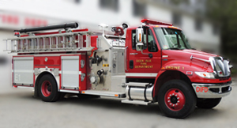

Deer Isle Volunteer Fire Department
Serving Deer Isle and Surrounding Communities With Pride and Tradition Since 1936.

Click for more pictures.
Engine 1
Year: 2010
Make: International 4400
Model: Tradition by E-One
Pump: 1250gpm
Tank: 1000 gallon
Equipment:
Fixed and Portable Master Stream Devices, 2x 200' 1 3/4" Pre-Connected Cross-lay, @50' 2 1/2" preconnected hole, 35' Extension Ladder, 14' Roof Ladder, Closet Ladder, ISG Infrasys Thermal Camera, Gas Meter, 6 Scott 2.2 Air Packs with 6 Spare Bottles, Honda Generator with Fixed and Portable Scene Lighting, 120v Smoke Ejector, 30' Hard Suction, Chain Saw, Hand tools, Chimney Cleaning Tools and Brushes, First-Aid Kit, Mobile and Portable Radios.Serving as the department’s first-due engine, Engine 1 is the primary apparatus responding to structure fires, alarm activations, chimney fires. Mid-ship controls allow the operator a 360-degree view of the fire ground.
Responding on the initial fire attack, Engine 1 has numerous pre-connected hand lines, supply lines and fixed deck gun. Supplied by the onboard 1000 gallon water tank and 30 gallons of class A foam, the engine can support initial firefighting operations at structure fires.